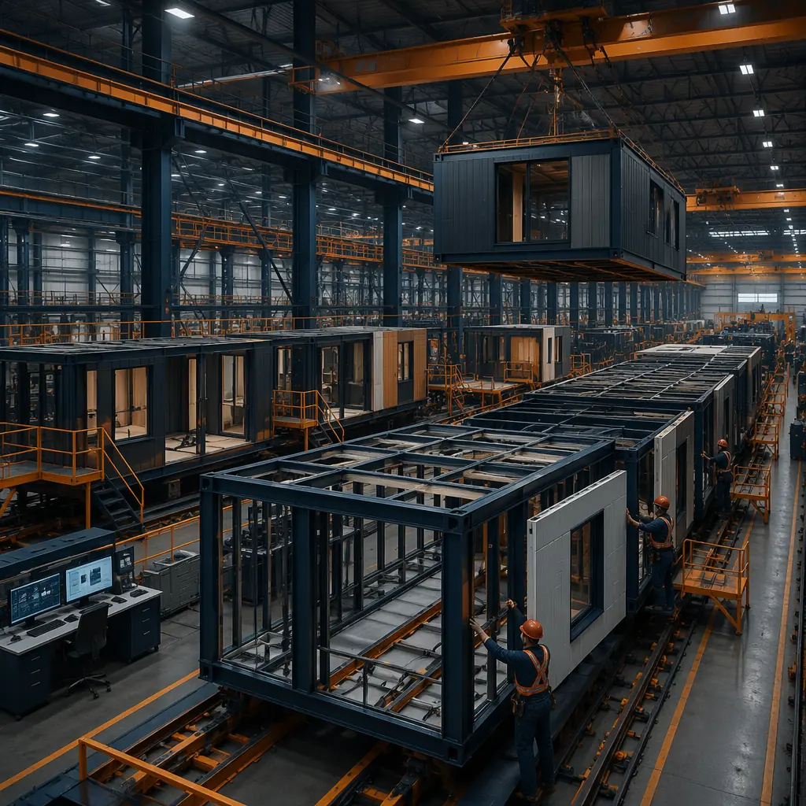
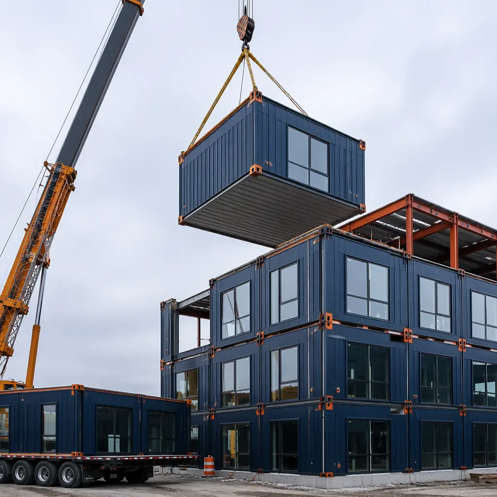

When developers evaluate alternatives to traditional stick-built construction, two methods dominate the conversation: modular construction and precast concrete. Both shift work from the job site into a factory, both promise faster timelines, and both claim superior quality. But they solve fundamentally different problems — and choosing the wrong one can add months and millions to your project. Here is what you need to know to make the right call.

What Each Method Actually Means
Modular construction produces complete volumetric units — finished rooms with walls, floors, ceilings, MEP systems, and interior finishes — inside a factory. A single module might be an entire hotel room with the bathroom already tiled, the HVAC ducted, and the light fixtures installed. These modules are then transported to site and stacked like building blocks.
Precast concrete produces individual structural components — wall panels, floor slabs, columns, beams, and staircases — cast in reusable molds at a precast plant. These components arrive at site as structural pieces that still need assembly, connections, MEP rough-in, insulation, and all interior finishes completed on-site.
Key Difference at a Glance
| Dimension | Modular Construction | Precast Concrete |
|---|---|---|
| Factory completion | 80–90% (finished rooms) | 20–30% (structural shell only) |
| On-site work | Foundation + connection + commissioning | Erection + MEP + insulation + all finishes |
| Typical project size | 5–300 units, repetitive layouts | Large-span, high-rise, custom forms |
| Best for | Hotels, apartments, offices, healthcare, education | Parking structures, industrial, stadiums, bridges |

Timeline: Two Different Definitions of "Fast"
Both methods claim to be faster than traditional construction — and both are. But the speed comes from different places, and the gap between them widens significantly when you account for the full project lifecycle.
Modular construction compresses the critical path because factory production of finished rooms runs in parallel with site foundation work. A 100-unit apartment building: 5–6 months of factory production running concurrently with 5–6 months of site preparation yields a total project duration of 7–9 months. The modules arrive on-site with electrical panels wired, plumbing roughed-in, drywall finished, and bathroom tile installed.
Precast concrete speeds up the structural frame — but everything else still happens on-site. A precast structural frame for the same 100-unit building can be erected in 4–6 weeks (impressive). But then the general contractor still needs to install MEP systems, insulation, drywall, finishes, and all interior work — adding 8–12 months of conventional on-site construction. Total: 10–14 months.
On a 120-key extended-stay hotel project, the developer evaluated both methods. Modular was projected at 8 months to occupancy; precast at 14 months. The 6-month gap translated to approximately $1.8M in additional operating revenue from opening sooner.
Timeline Comparison: 100-Unit Mid-Rise Apartment
- Modular: 7–9 months (design 3 mo + parallel factory/site 5–6 mo + commissioning 1 mo)
- Precast: 10–14 months (design 3 mo + precast production 3 mo + erection 1 mo + on-site MEP/finishes 3–7 mo)
- Time saved with modular: 3–5 months (30–35% reduction)
Cost: The Hidden Numbers Developers Miss
Precast concrete often appears cheaper on paper — the raw material and production cost per square foot can be 10–15% lower than modular. But published unit costs rarely capture the full picture. Three cost factors tilt the math toward modular when you run the complete project budget.
- On-site labor and management: Modular's 80–90% factory completion slashes on-site labor to roughly 20% of a conventional project. Precast still requires 60–70% of conventional on-site man-hours for MEP, finishes, and coordination. At $65–95/hour for skilled construction labor in major US markets, this gap alone erases precast's material advantage.
- Financing costs: Construction loans accrue interest monthly. A 9-month modular project at 7% on a $15M loan = approximately $394K in interest. A 14-month precast project = $613K. The $219K difference covers most of modular's unit cost premium.
- Change orders and contingency: Factory-controlled modular production delivers projects within 5% of budget 92% of the time. On-site MEP and finish work — which dominates precast projects — carries the same 15–20% change order risk as traditional construction. On a $15M project, that is a $1.5M–$2.25M exposure difference.
Total Project Cost Comparison (100-Unit, Mid-Market)
- Modular: $14.5M – $16.5M (narrow band, <5% variance)
- Precast with on-site finishes: $15M – $19M (wide band, 15–20% change order risk)
- Likely savings with modular: $500K – $2.5M when financing and contingency are included

Quality Control: Manufacturing Precision vs. Site-Dependent Finishes
This is where the two methods diverge most dramatically — and where modular's advantage is hardest for precast to match.
Modular units are built on assembly lines with digital workstations, laser-guided tooling, and inspection at every stage. Dimensional tolerances reach ±2mm — the kind of precision you expect in automotive manufacturing, not construction. Every module passes a multi-point QC checklist before leaving the factory. Water testing, electrical continuity, and HVAC balancing are all completed under controlled conditions.
Precast structural components achieve similar precision — ±3mm for dimensionally critical elements — because they too are cast in factory molds. But the quality advantage stops at the structure. All MEP rough-in, drywall, finishes, and fixture installation still happen on-site, exposed to weather, dependent on subcontractor skill, and subject to the same variability as any conventional build. You get a precise skeleton wrapped in site-built finishes.
MODURA factories operate at ±2mm tolerance — inspected at every workstation and documented digitally. The result: building envelopes that are measurably tighter, HVAC systems that perform to design spec, and punch lists that are 70% shorter than site-built equivalents.
Sustainability: Waste Reduction vs. Material Longevity
Both methods outperform traditional construction environmentally — but through different mechanisms, and the magnitude of improvement varies.
Modular construction reduces construction waste by 60–70% because materials are cut to precise specifications in a factory with optimized nesting and material recovery systems. Factory production also cuts carbon emissions by approximately 30% through reduced site traffic, shorter construction duration, and elimination of weather-related rework. At MODURA, 70% less jobsite waste and 30% lower embodied carbon are measured outcomes, not projections.
Precast concrete's sustainability strength is its thermal mass — concrete absorbs heat during the day and releases it at night, reducing HVAC energy consumption by 10–15% over the building's life. Precast also offers exceptional durability (50–100 year service life) and fire resistance. However, cement production accounts for roughly 8% of global CO₂ emissions, and the embodied carbon of precast is substantially higher than modular's steel-and-light-gauge framing.
Sustainability Scorecard
| Metric | Modular | Precast Concrete |
|---|---|---|
| Construction waste | 60–70% reduction | 30–40% reduction |
| Embodied carbon | ~30% lower than traditional | Higher (cement-intensive) |
| Operational energy savings | 5–10% (tighter envelope) | 10–15% (thermal mass) |
| Building lifespan | 50–75 years | 50–100 years |
When to Choose Each Method
Neither method is universally superior — the right choice depends on what you are building, where you are building it, and what constraints matter most.
Choose Modular Construction When:
- Repetitive units dominate the program — hotels with identical rooms, apartment buildings with repeated floorplates, student housing, senior living facilities, and workforce housing are the sweet spot. Our article on modular apartments covers residential applications in detail.
- Speed to occupancy drives ROI — every month of earlier opening generates revenue. Hotels (see our hotel timeline analysis), senior living, and rental apartments all monetize speed directly.
- Labor availability is constrained — remote locations, tight labor markets, or projects where you cannot staff a large on-site crew for 12+ months. Our workforce housing article explores remote deployment challenges.
- Quality consistency matters — hospitality brands, healthcare facilities, and education buildings where consistent room quality and tight MEP tolerances are non-negotiable. See healthcare modular construction for requirements.
Choose Precast Concrete When:
- Large clear spans are required — parking garages, industrial floors, warehouse mezzanines, and stadium concourses where column-free space is the priority.
- Extreme durability governs — chemical plants, water treatment facilities, marine structures, and infrastructure where concrete's resistance to corrosion, fire, and impact outweighs schedule concerns.
- Building height exceeds 12 stories — while modular high-rise is advancing rapidly, precast's structural continuity and proven performance in 20+ story buildings give it the edge in ultra-tall applications.
- Custom architectural forms are essential — curved facades, cantilevered elements, and non-repetitive geometries where volumetric modules become inefficient.
The Hybrid Approach: When Both Methods Work Together
A growing number of projects combine modular and precast on the same site — using precast for the podium, parking structure, or ground-floor retail shell, and modular for the upper-floor residential or hospitality units. This hybrid model captures precast's structural efficiency at the base and modular's speed-to-completion in the repetitive upper floors. For developers evaluating mixed-use projects — retail at grade, apartments above — this approach often delivers the best of both worlds. Our article on mixed-use modular developments covers this strategy in depth.
Making the Final Decision
The choice between modular and precast comes down to three questions every developer should ask:
- What percentage of my square footage is repetitive? Above 60%, modular's factory completion advantage compounds. Below 40%, precast's structural-first approach may fit better.
- How much is one month of earlier occupancy worth? If the answer is $200K+, modular's schedule compression pays for itself. For revenue-generating buildings — hotels, rentals, senior living — the answer is almost always yes.
- What happens to my budget if on-site labor runs 15% over? If the answer is "project failure," modular's 5% cost predictability is worth the unit cost premium. If your contingency can absorb wider variance, precast becomes more attractive.
At MODURA, we have delivered over 500 modular projects across 18 countries — from 30-key boutique hotels to 200-unit apartment complexes — with 92% completing within 5% of the original budget. Our four factories across North America, Europe, and Southeast Asia produce 4,000 modules annually at ISO 9001 and ISO 14001 certified quality. Whether you are comparing methods or ready to move forward, a structured ROI analysis is the right next step.